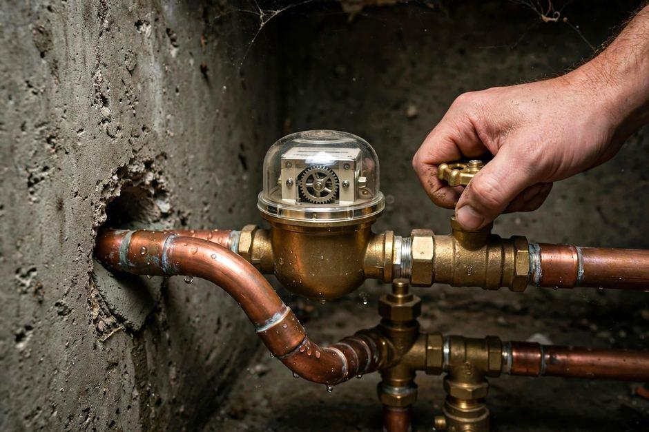

Slab Leak Services in Belleville, Illinois
Slab Leak Repair Belleville IL: Leaks Under Concrete Slabs
A slab leak is a leak in a pipe beneath a concrete slab, either under a basement floor or under a slab-on-grade floor. In Belleville, expansive clay soil can shift with moisture changes, stressing buried lines. Careful testing helps locate the leak before repair choices are discussed.
Basement floor slabs and slab-on-grade floorsExpansive clay soil in Belleville, IllinoisMonday through Friday, 8:00 AM to 4:30 PM. Closed Saturday and Sunday.
What Is Included
Slab Leak Repair Work in Belleville, IL
Slab leak work begins with locating the leak and confirming the line involved. Testing and inspection shape the repair plan, and leak detection methods help narrow the area under the slab before any concrete is opened.
Signs and History Review
The visit starts with a review of signs at the home, including damp areas, warm flooring, sounds of running water, and changes in water use. That history helps focus testing on the most likely area under the slab.
Meter and Pressure Testing
Meter movement with fixtures off and pressure readings can show whether water is leaving the system. Results are read alongside visible signs, so testing points toward a supply line, a drain line, or another source.
Listening and Thermal Checks
Acoustic listening and thermal imaging can help narrow a leak area by tracing sound and surface warmth. These checks support location work without opening the slab, and findings guide the next step in diagnosis.
Confirming the Leak Location
Further testing helps confirm whether the leak sits in a supply line, a drain line, or a fitting under the slab. A confirmed location matters because each type of line calls for a different repair approach and scope.
Repair Options Explained
Repair choices depend on the line, the location, access, and the condition of nearby piping. Options may include a spot repair, rerouting, or replacing a section, with the scope and trade-offs of each choice discussed before work is agreed.
Slab Opening and Closing
When a slab must be opened, the work includes the opening, the repair, and closing the floor afterward. Flooring and finishing needs are part of the scope discussion, so the full extent of work is clear before work begins.
About Hinkle Plumbing Company
A Belleville Plumbing Company for Slab Leak Work
Hinkle Plumbing Company is based in Belleville, Illinois, and serves homes in Belleville with plumbing work that starts with testing, clear findings, and a discussion of repair scope before work begins.
The office is at 1610 W Main St, Belleville, IL 62220. Callers can reach the company at (618) 677-6556 during office hours. Monday through Friday, 8:00 AM to 4:30 PM. Closed Saturday and Sunday. When a slab leak is suspected, the discussion covers signs, testing, repair choices, and floor restoration, including whether related leak repair work belongs in that plan.

How we workInterior floor area above a concrete slab in a Belleville home.
How the Work Proceeds
From Signs to Repair
The steps flex with the condition of the job, but the sequence stays the same.
Describe the Signs
Describe damp areas, warm spots, sounds, and water use changes when calling. That account helps shape the visit and keeps testing focused on areas where signs have appeared at the home.
Run Meter and Pressure Checks
Meter and pressure checks, with a look at visible piping and fixtures, help show whether water is leaving the system out of sight. Findings are read together rather than treated as a single answer on their own.
Narrow the Leak Area
Listening and thermal checks help narrow the area under the slab where a leak may sit. The aim is a smaller, defined area for further testing, so any slab opening follows evidence gathered during diagnosis.
Discuss Repair Scope
With a location confirmed, repair choices, access needs, and restoration scope are discussed. The conversation covers what the repair involves, which part of the floor is affected, and what closing the floor afterward involves.
Complete Repair and Closing
The agreed repair is carried out, and the slab opening is closed as part of the scope discussed. Flooring and finishing follow the plan agreed before work began, with the affected area left as described in that plan.
Repair Methods
Options for a Leak Under a Slab
Repair methods vary with the line, the location, and the condition of nearby piping. The methods below are described in general terms, so a reader can follow the discussion when options are weighed for a particular home.
Spot Repair at the Leak
A spot repair addresses a defined leak point in a line under the slab, with an opening made at the confirmed location. This approach suits a single, defined leak where nearby piping shows no wider concern during diagnosis.
Rerouting a Supply Line
Rerouting moves a supply line to a different path above the slab, so the leaking section under the slab is left out of service. Rerouting is weighed when access under the slab is limited or the existing path carries risk.
Replacing a Pipe Section
Section replacement removes a length of damaged or deteriorated piping and installs a replacement section in its place. The length replaced follows the condition found during diagnosis, rather than a preset length applied to every home.
Drain Line Repair Under a Slab
A drain leak under a slab calls for a different approach from a supply leak, because drain lines carry wastewater by gravity and depend on slope and joints. Diagnosis separates drain and supply causes before a repair method is selected.
Pipe Material Checks
Older piping under a slab may include copper, galvanized steel, or cast iron, and era-typical material should be checked rather than assumed. Material affects joining methods, the condition of nearby sections, and whether wider work is discussed.
When Wider Work Is Discussed
When diagnosis shows wider deterioration, the discussion may turn to broader work beyond a single repair point. That conversation weighs the condition of the system, access, restoration scope, and the trade-offs of addressing more piping in one visit.
Common Patterns
How Slab Leaks Come to Attention
Slab leaks present in different ways depending on the line involved and the floor above it. The patterns below describe common ways a slab leak comes to attention in a home.
Damp Flooring Over a Basement Slab
A common call describes damp flooring or a damp patch on a basement floor, with no visible leak at a fixture. The discussion covers where the damp area sits, whether it changes, and what lines run beneath that part of the floor. Meter and pressure checks, together with listening and thermal checks, help narrow whether water is leaving a supply line or a drain line under the slab, and where further testing belongs before any opening is made.
Warm Floor Area in a Slab-on-Grade Home
A common call describes a warm area on the floor in a home built on a slab, sometimes with a change in water use. The discussion covers which rooms are affected, whether a hot water line runs beneath that area, and what meter checks show with fixtures off. Listening and thermal checks help narrow the area, and the repair discussion weighs a localized repair against rerouting, with floor restoration scope included from the start.
Signs and Concerns
Signs That Point to a Leak Under a Slab
Most calls fall into a few patterns. Knowing which pattern applies decides what the visit involves.
Damp or Discolored Flooring
Damp, warped, or discolored flooring over a slab can indicate water reaching the surface from below. The area is checked alongside meter readings and nearby fixtures, so a surface stain is not mistaken for the leak location itself.
Warm Spots on the Floor
A warm area on a floor can indicate a leak in a hot water line beneath the slab. Thermal checks help show the pattern of warmth, and the finding is weighed with meter and pressure results before a location is treated as confirmed.
Sound of Running Water
The sound of running water when fixtures are off can indicate water moving through a line out of sight. Listening checks help narrow the area, and the sound is considered with meter movement and visible signs before further testing is planned.
Soil Movement and Buried Lines
Expansive clay soil can shift as moisture levels change, and freeze and thaw cycles add further movement. That ground movement can stress buried lines over time, which is one reason a leak under a slab is checked in the context of soil and seasonal change.
Scope Discussion
What Shapes the Scope of Slab Leak Repair
Scope depends on location, access, and the line involved.
Leak Location and Access
The depth and position of the leak, the type of flooring above it, and how much of the slab must be opened all shape scope. A leak in an open floor area presents different access needs from a leak beneath fixed fittings or finished rooms.
Line Type and Pipe Condition
Whether the leak is in a supply line or a drain line, the pipe material, and the condition of nearby sections all affect the repair method. A single repair point and a broader section replacement involve different amounts of piping, joining, and testing work.
Restoration and Permit Scope
Closing the slab, patching, and finishing the floor are part of the scope, together with any permit steps that apply. Readers are asked to call to discuss scope for a particular home, so the discussion reflects location, access, and restoration needs found during diagnosis.
Reviews from Google
What Customers Say on Google
★★★★★
“Very prompt and responsive, the worker was friendly and informative! Will use this company again!”
★★★★★
“Don did an outstanding job for me when I needed him and highly recommend his business”
★★★★★
“Rated 5.0 out of 5 across 3 Google reviews, all five stars.”
What is a slab leak?
A slab leak is a leak in a water or drain line beneath a concrete slab. In Belleville, Illinois, that can mean a leak under a basement floor slab or under a slab-on-grade floor. Causes can include clay soil movement, corrosion, and freeze and thaw cycles stressing buried piping, and diagnosis is needed to place the leak before repair options are discussed.
How is a slab leak located?
Location work combines meter and pressure checks with listening and thermal checks, together with a review of visible signs at the home. The checks narrow an area under the slab, and further testing helps confirm whether a supply line, a drain line, or a related connection is involved before any floor is opened.
What affects the scope of slab leak repair?
Scope depends on the leak location, the line involved, access through the floor, pipe material and condition, and the restoration work needed to close the slab and finish the floor. Because those factors vary by home, readers are asked to call (618) 677-6556 during office hours to discuss scope for a particular home.
Is a permit needed for slab leak repair in Belleville?
Permit needs depend on the work involved. The City of Belleville requires a permit before plumbing work begins (§152.05(A)); direct replacement of a toilet, sink, faucet, or other appliance is exempt, except hot water heaters require an electrical or gas permit (§152.05(B)(3)). Readers are asked to discuss permit steps for a particular repair during the scope discussion.
Related services
Other Plumbing Services We Handle

Leak Detection in Belleville, IL
Diagnostic checks for hidden leaks, including meter, pressure, listening, and thermal checks that narrow a leak area before repair work is discussed.
Leak Repair in Belleville, IL
Repair work for leaks in supply and drain lines, with scope shaped by the line involved, the location, access, and the condition of nearby piping.
Repiping in Belleville, IL
Broader piping replacement for homes where diagnosis shows wider deterioration, with material and restoration scope discussed as part of the plan.Mon–Fri 8:00 AM–4:30 PM
Discuss a Possible Slab Leak in Belleville, IL
Call Hinkle Plumbing Company at (618) 677-6556 during office hours. Monday through Friday, 8:00 AM to 4:30 PM. Closed Saturday and Sunday. Describe the signs you have noticed, and the discussion can cover testing, repair options, and restoration scope for your home.
Talk with the local team
Request Slab Leak Repair
Call (618) 677-6556 during office hours, Monday through Friday, 8:00 AM to 4:30 PM. Tell us what is happening and we will talk through the next step.